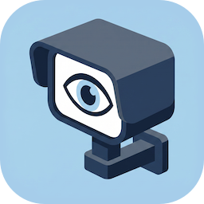
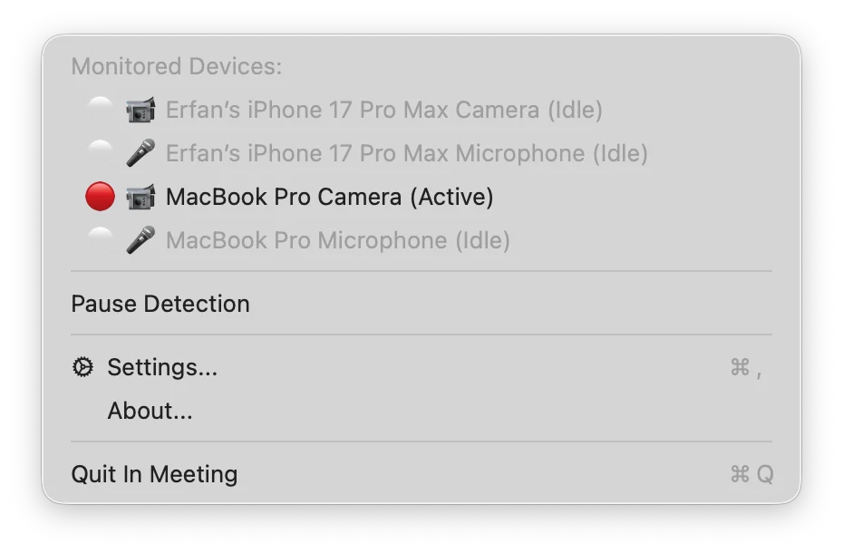
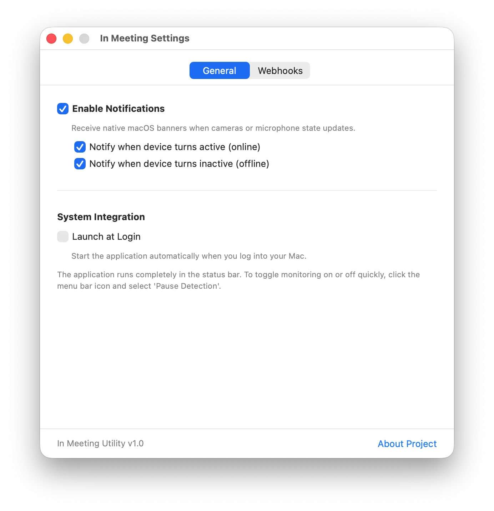
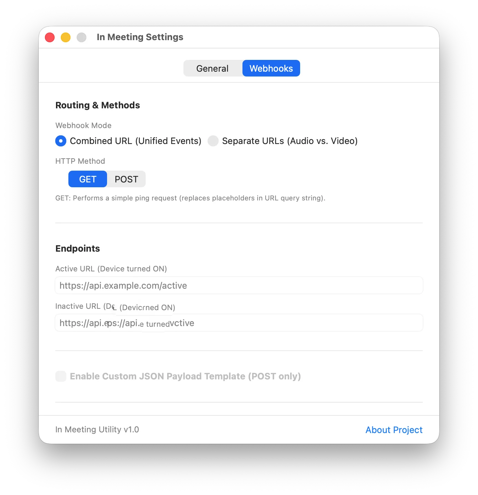

In MeetingA lightweight macOS utility that instantly triggers webhooks to update your home automation status lights (free/busy) and displays native notifications the second any app accesses your camera or microphone.
In Meeting is a native macOS utility built for smart home enthusiasts and privacy-conscious users. Whether you want to toggle a physical "Do Not Disturb" status light outside your home office door using Home Assistant webhooks, or you want to be alerted instantly with a macOS notification whenever a background application silently accesses your camera or microphone, In Meeting handles it seamlessly.
Take a look inside the clean status bar control menu and native settings panel.

Access options instantly from your macOS menu bar. The menu bar icon changes dynamically to reflect your active hardware capture state.

Tailor the notification responses and start options exactly to your developer workflow.

Set custom HTTP targets to call when devices activate or deactivate. Integrates with home automation bridges and local servers.
A native, modern solution that replaces legacy polling tasks.
Uses CoreAudio and CoreMediaIO listener blocks directly. Triggers instantly without background processes scanning or polling log streams.
Configure Combined or Separate endpoint URLs for audio and video feeds. Supports both POST (JSON body) and GET (parameter query replacements) requests.
Automatically retries failed webhook requests up to 3 times using exponential backoff to handle temporary network loss.
Integrates natively with the modern macOS `SMAppService` API to register itself as a login launch item with a single toggle switch.
Receive immediate, compliant native macOS system notifications on state transitions, including pause status support.
Toggle individual devices directly from the menu bar status list. Excluded devices will not trigger webhooks or notifications.
Stays strictly under 40 MB of RAM usage and uses 0.0% CPU when idle, helping preserve battery life.
Install the precompiled binary via Homebrew or build it using Xcode.
Install the precompiled application directly through Homebrew:
brew install fellowgeek/tap/in-meetingOnce installed, open your Applications folder and launch In Meeting.app.
git clone https://github.com/fellowgeek/in-meeting.gitIn Meeting.xcodeproj in Xcode.
⌘R.
In Meeting values your confidentiality. The application features zero telemetry, zero analytics tracking, and zero external network queries. All hardware capture observation states remain entirely local, and Webhook payloads are transmitted directly from your device to the targets you specify.
We believe in absolute transparency. In Meeting is completely open source, allowing you to review the Swift and macOS framework code yourself. Modify it, contribute to it, or build your own version under the terms of the permissive MIT License.